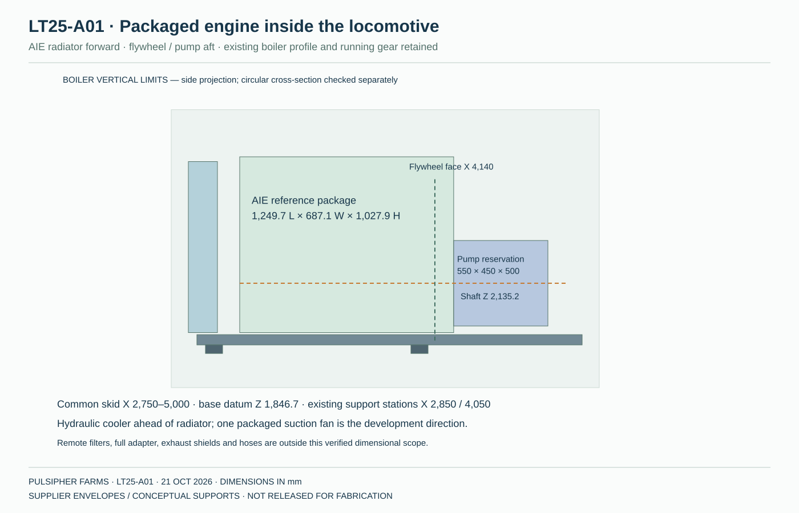
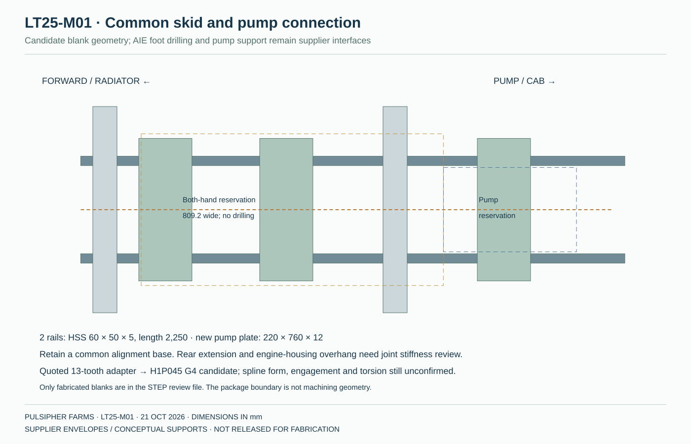
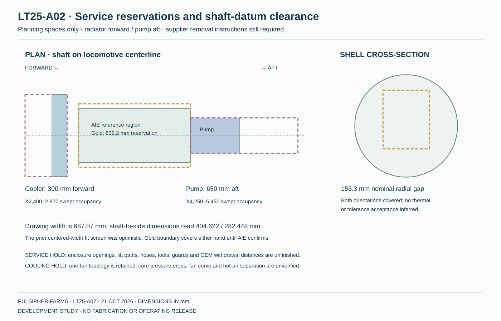

LT25 · SUPPLIER ENGINE INTEGRATION · OCTOBER 21, 2026
The engine package becomes the layout basis.
Tony’s AIE quote now controls the engine candidate, package space and pump-interface study. The radiator faces forward, the pump sits aft on a common skid, and the locomotive retains its eight-driver proportions.

Engine package; pump not listed. Landed cost unconfirmed.
One shared fan remains the direction. This proposal uses the AIE package’s suction fan and moves the hydraulic-cooler reservation upstream of the radiator. The former separate radiator and large fan placeholders are removed from the current model.
LT25 FOLLOW-UP · OCTOBER 21, 2026
Eight supplier inquiries sent. Ratings still await confirmation.
The quoted package is placed in the model. This follow-up adds service-path reservations, corrects the asymmetric package clearance screen, and defines the proposed complete-train brake-failure requirements. No new supplier capacity or bumper curve has been received.
Engine, pump and common skid in 3D
Installation drawings
The supplier drawing supplies the outer package dimensions and shaft datum. Internal engine shapes are schematic. The 2,250 mm skid rails and new pump-support blank are proposed geometry; final mounting holes remain undrilled.

Service and airflow checks
Use Service paths in the 3D viewer to inspect purple withdrawal reservations. The illustrative motions reserve 650 mm aft for the pump and 300 mm forward for the hydraulic cooler. These are planning allowances, not supplier-specified removal distances.
| Check | Finding | Open item |
|---|---|---|
| Package to shell | Both-hand shaft-based reservation gives 153.3 mm nominal radial gap; replaces the centered-width result of 184.6 mm. | Actual configured protrusions, motion, tolerances and thermal clearances. |
| Pump withdrawal | Swept reservation X4,250–5,450, Y±225, Z1,885.244–2,385.244 mm. | No retained machinery AABB overlap in the cutaway screen. Enclosure opening, fitting disconnect, tools, lift/exit path and OEM distance remain unproven. |
| Cooler withdrawal | Swept reservation X2,400–2,870, Y±525, Z1,846.7–2,846.7 mm. | No retained machinery AABB overlap in the cutaway screen. Front opening, drained mass, hose disconnect and lifting still require design. |
| Radiator / fan service | Upstream cooler occupies the proposed forward removal corridor. | Plan cooler removal before radiator extraction; fan guard/shroud, belts and actual extraction path await AIE. |
| Air path | Fresh inlet → oil cooler → packaged radiator/CAC region → suction fan → engine bay → separate outlet. | This is topology only. Fan curve, core losses, inlet/outlet free area, hot-air sealing and hot-weather test remain open. |
| Remote filters / cab harness | Filters and key panel are off-engine per drawing; included harness 1.524 m versus ≥4.60 m current separation screen. | Locate serviceable filters, prevent fuel exposure to hot parts, obtain approved harness, shields and routing. |
The service screen excludes the removed enclosure surfaces and schematic boundary bars; it is a broad-phase machinery check, not a collision-free removal demonstration. No vents or access doors have been cut from the shell.

Installation sequence
- Confirm the supplied assembly. Match quote Rev B to the generic Rev C drawing, with actual mass, centre of gravity, mounting feet and cooling equipment.
- Finalize the common skid. Resolve the rear cantilever and pump housing support together; keep the engine and pump aligned on the same base.
- Match the drive interface. Confirm the configured pump, rotation, coupling, spline engagement and power/torque control before drilling.
- Finish services. Locate the remote fuel filters, exhaust shielding, hydraulic lines and fan guarding. Obtain an approved longer control harness for the cab.
- Complete installed checks. Verify hot-weather cooling, service removal, movement clearances, braking and structural details before release.
Two supplier questions affect the design. The quote’s horsepower description conflicts with Kubota’s continuous rating, and unrestricted engine peak torque exceeds the candidate 13-tooth pump shaft’s catalog maximum. LT25 uses provisional power/torque limits; no limiter or complete pump package has been selected or validated.